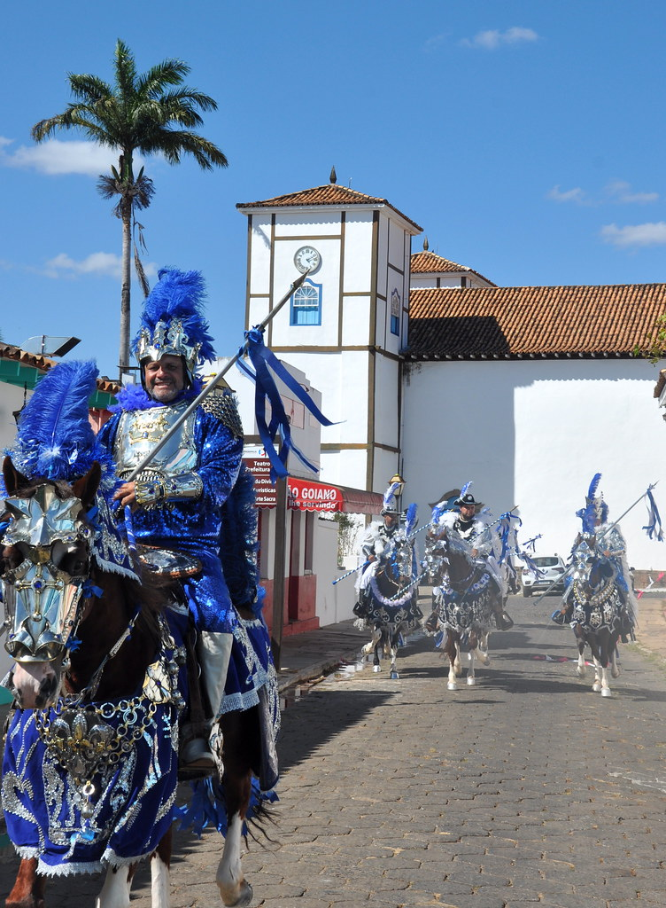
o “curucucu” dos mascarados · a banda de música na Festa do Divino · moda de viola
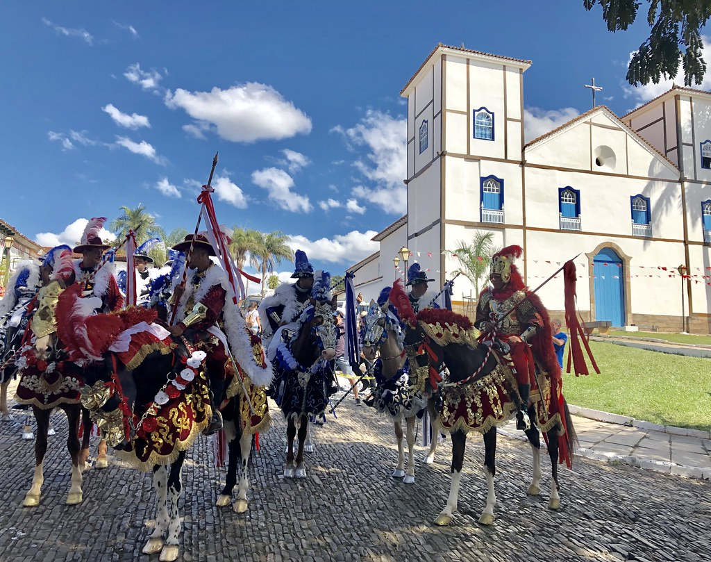
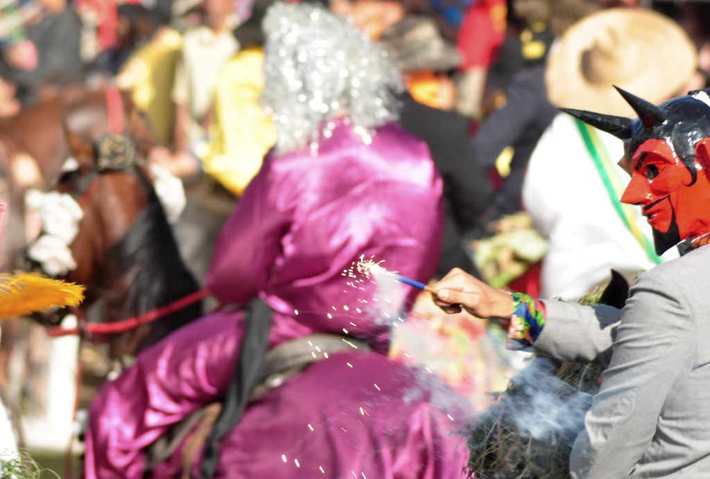
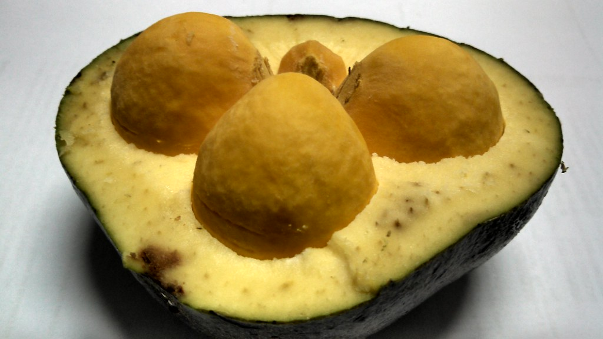
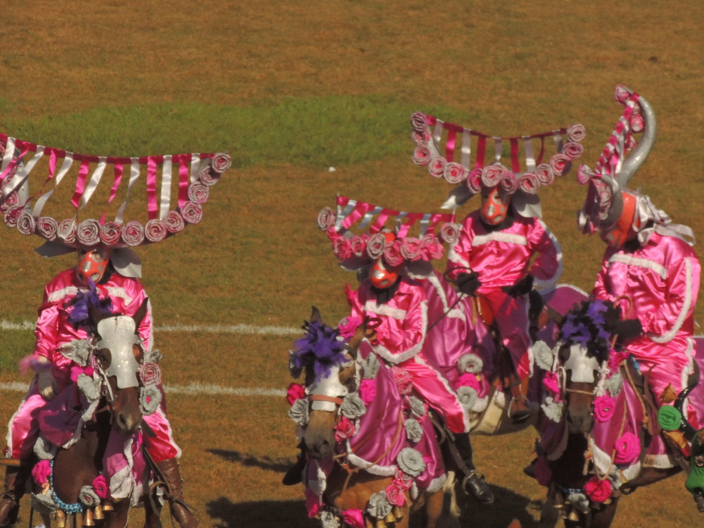
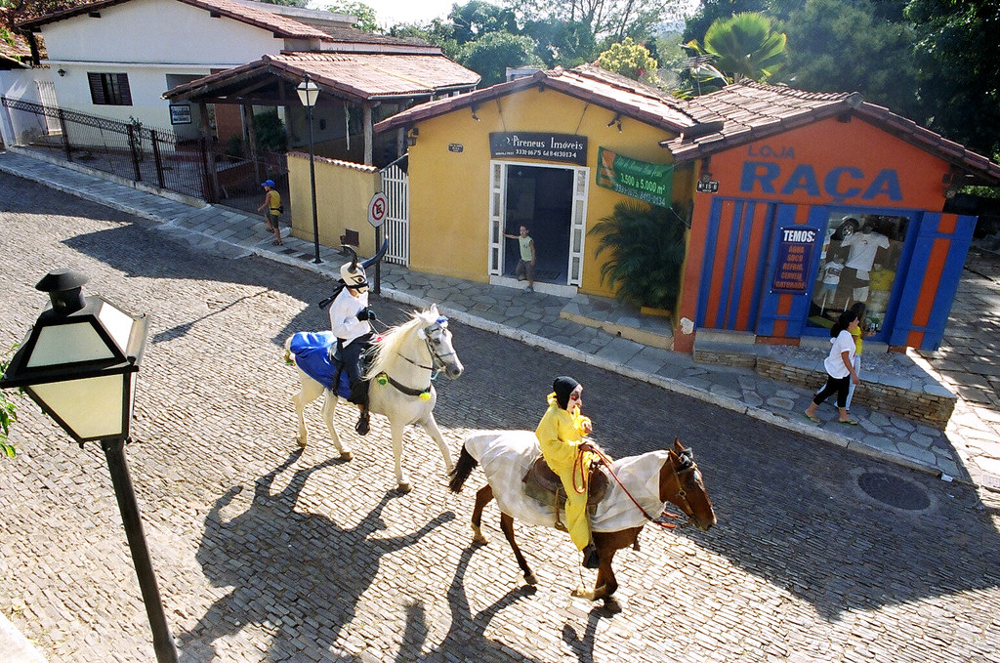
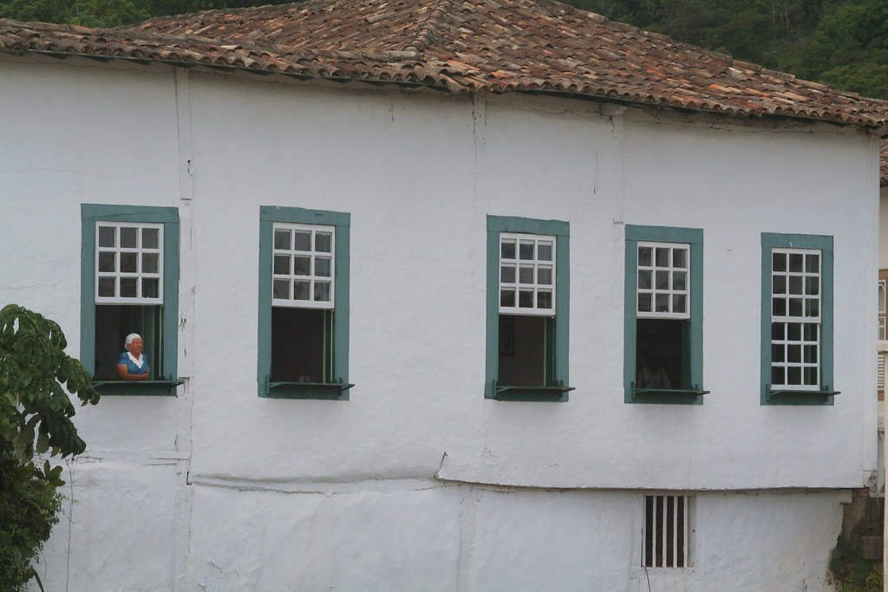
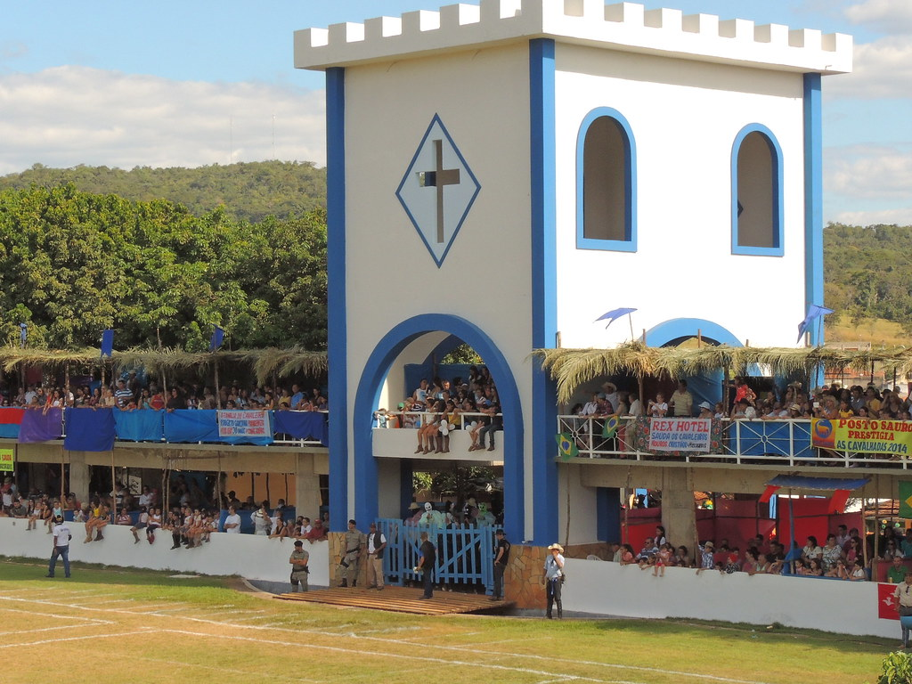
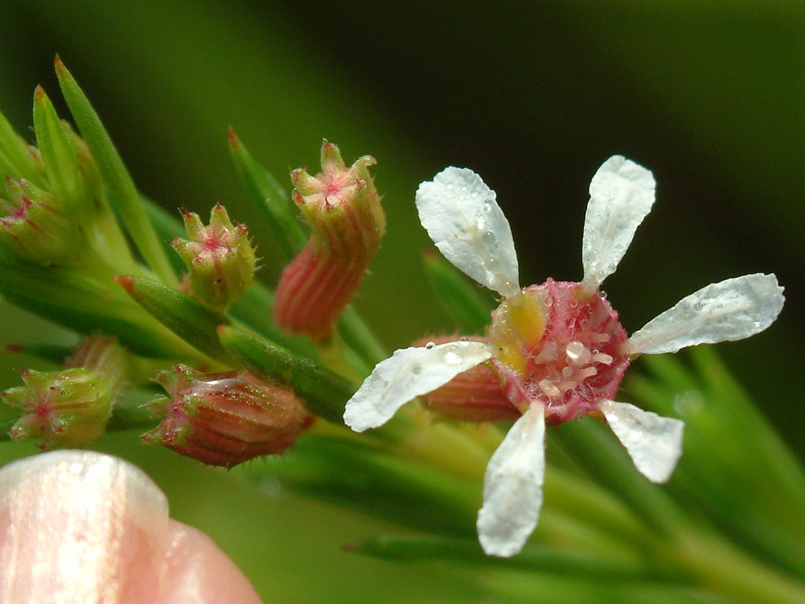
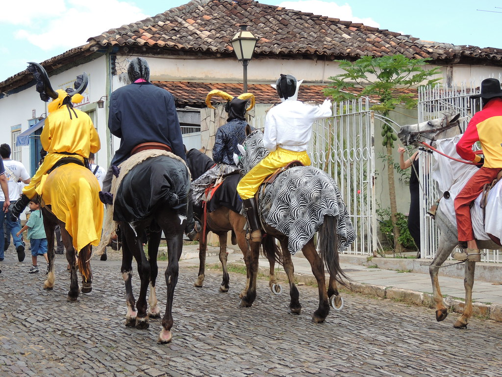
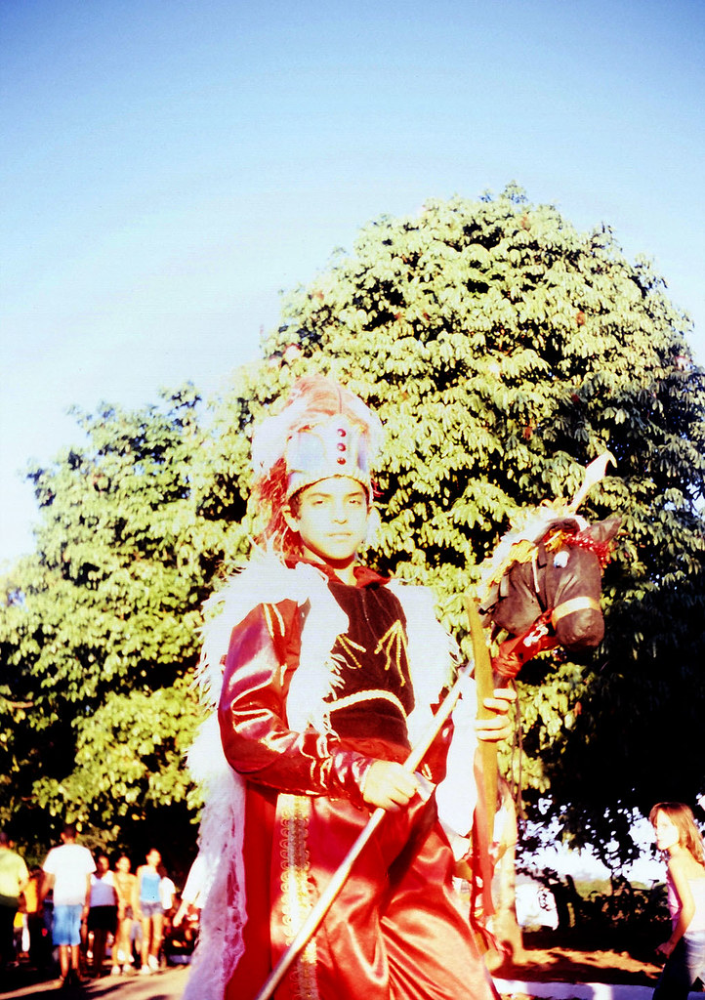
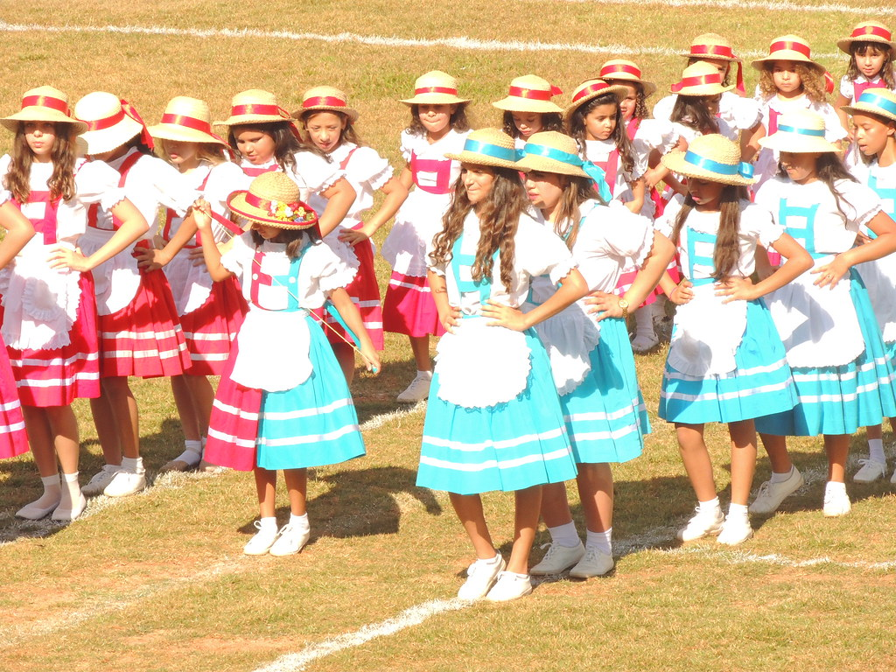
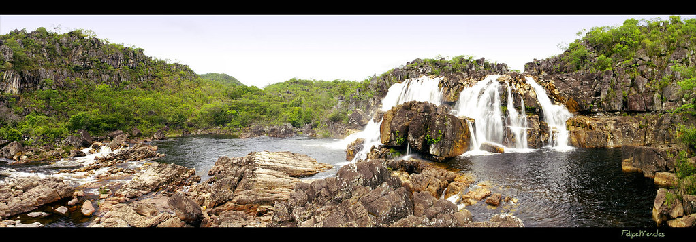
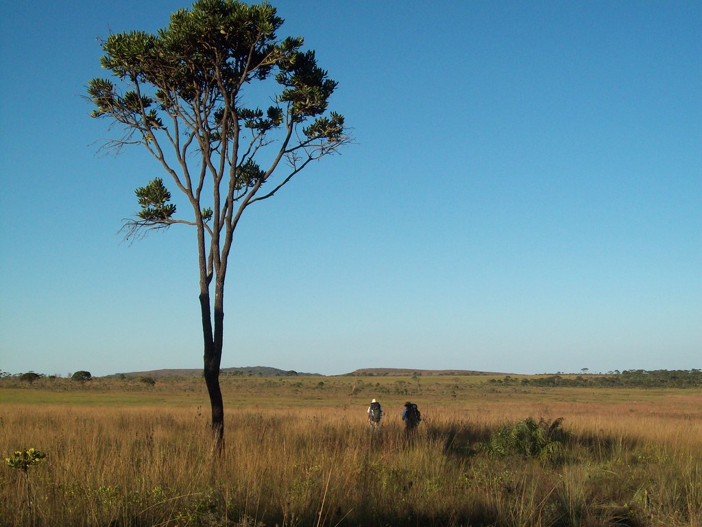
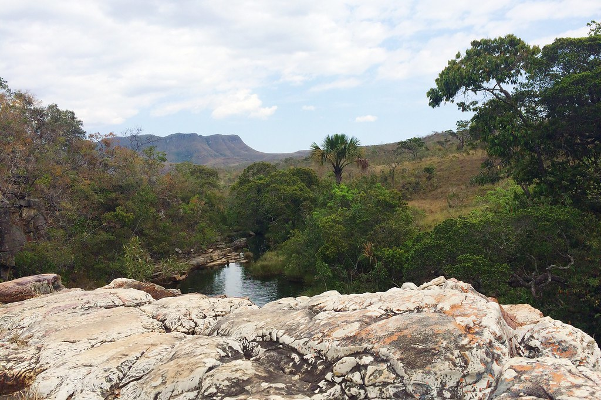
Máscara do mascarado — flores de papel, franjas e brilho: a forma mais festiva do estado.
Cavalo enfeitado — o cavalo coberto de fitas e flores é parte da festa; o coração mora no peitoral.
Mouros e cristãos — vermelho contra azul: as duas fitas que se cruzam na estampa.
Pequi — o amarelo mais goiano que existe, aberto em gomos.
Casario de Goiás — janelas verdes sobre a cal, como faixa de base.
Flor do cerrado — as flores miúdas viram a decoração suave em volta.
O cavalo das Cavalhadas de Pirenópolis, todo enfeitado de flores de papel e fitas, carrega um mascarado de máscara de boi florida; pequis abertos e as fitas azul e vermelha de mouros e cristãos cruzam o quadro.
Protagonista: o cavalo enfeitado, com o mascarado montado.
Em volta: pequis abertos; fitas azul (cristãos) e vermelha (mouros).
Fundo: azul chapado; uma faixa de chita na base faz o respiro para a assinatura.
Decorações: flores de papel crepom, franjas e brilho.
bicho-guia · cavalo das Cavalhadas
Vestido de festa com saia em camadas (flores de papel), kimono; Havaianas: tira azul no pé esquerdo e vermelha no direito, como mouros e cristãos, e palmilha florida.
A Festa do Divino é religiosa; os mascarados são a brincadeira popular dentro dela. As máscaras são feitas à mão por mascareiros de Pirenópolis: a proposta é parceria com eles, com crédito.
Festa do Divino Espírito Santo de Pirenópolis: Patrimônio Cultural do Brasil (IPHAN, 2010). Cavalhadas: 200 anos em 2026 (Folha PE; Jornal de Brasília). Cidade de Goiás: Patrimônio Mundial UNESCO (2001). Fotos: Flickr e Wikimedia Commons (via Openverse), autor e licença em cada imagem; local conferido no título, nas tags ou na descrição.